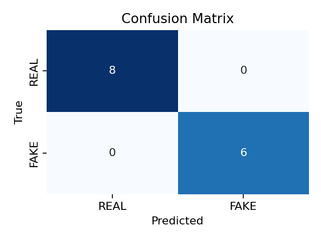
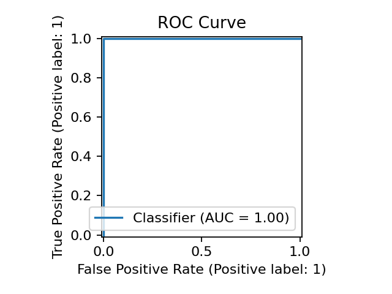
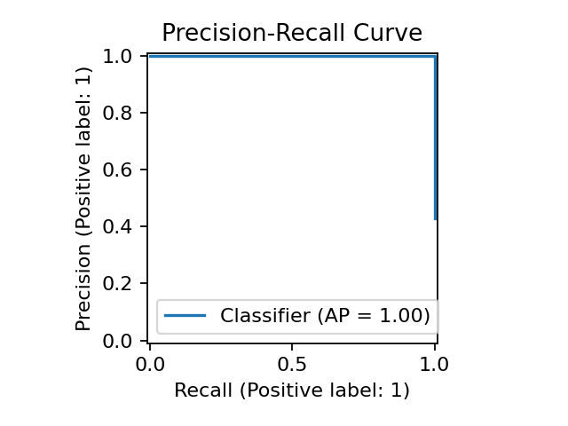

Review Inspection
Real-time linguistic, behavioral, and statistical classification
MODEL: TF-IDF + LOGISTIC
STATUS: ONLINE
Review Input
Analysis Verdict
FLAGGED: SUSPICIOUS
96.4%
High risk score detected from linguistic markers and repeated promotional phrasing.
Sentiment Polarity
0.85
Normalized [-1.0 to 1.0]
Uppercase Tokens
2
Words > 3 capital letters
Punctuation Count
6
Exclamation intensity
Cliché Matches
2
Known promotional phrases
Linguistic Markers & Triggers
Bulk Dataset Inference
ROC-AUC Benchmark
1.000
Average Precision
1.000
Test Set Accuracy
100.0%
Feature Weights
150 Coefficients
Confusion Matrix

ROC Curve

Precision-Recall Curve

Total Benchmark Records
70
Authentic (REAL)
40
Synthetic (FAKE)
30
Explore Benchmark Dataset
| Review Text | Ground Truth |
|---|
Inference & Pipeline Specifications
The verification pipeline extracts statistical n-gram patterns alongside six behavioral heuristics to compute risk probability with zero latency.
Vectorization Engine
• Unigram & Bigram (1–2 ngram range)
• Sublinear TF-IDF term weighting
• Punctuation & HTML cleaning
Behavioral Heuristics
• Uppercase token frequency (> 3 chars)
• Exclamation point density
• Promotional dictionary match
• Sentiment polarity & lexical diversity